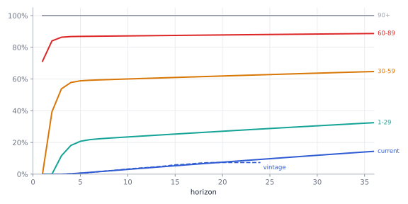

存续期 PD 与预期信用损失#
IFRS 9 要求贷款人为其预期的贷款信用损失计提损失准备。只要贷款的信用风险自发放以来没有显著增加，损失准备覆盖未来 12 个月内违约造成的损失；一旦信用风险显著增加，以及贷款已经违约，损失准备覆盖贷款剩余存续期内的损失。两者都需要报告日之后每一期的违约概率，即 PD 期限结构，而不只是评分卡给出的一个 12 个月 PD。
期限结构来自 Vintage 与滚动率分析 中的 vintage 曲线和转移矩阵，损失准备是本用户指南的最后一步。 convert_pd() 在累计、边际和条件 PD 之间转换期限结构， transition_pd() 由转移矩阵推算期限结构， expected_credit_loss() 给出每个账户的 12 个月和整个存续期预期信用损失， significant_increase() 和 assign_stages() 把账户划分到三个阶段， stage_table() 汇总每个阶段的损失准备。
定义#
PD 期限结构描述从某个起点（例如贷款发放日或报告日）开始每一期的风险。对第 \(k\) 期， 累计 PD \(C_k\) 是在第 1 期到第 \(k\) 期之间违约的概率， 边际 PD \(m_k\) 是在第 \(k\) 期违约的概率， 条件 PD \(h_k\) （又称风险率，hazard rate）是此前未违约的前提下在第 \(k\) 期违约的概率。令 \(C_0 = 0\) ，三者可以相互推出：
账户的预期信用损失（ECL）对报告日之后的各期 \(t = 1, \ldots, H\) 求和：每一期的边际 PD 乘以该期的违约损失率（LGD）和违约风险敞口（EAD），再按每期实际利率 \(r\) 折现到报告日：
12 个月 ECL 对未来 12 个月内的各期求和，整个存续期 ECL 对直到到期的每一期求和。 expected_credit_loss() 采用以下约定：
第 1 期从报告日开始，一期后结束，因此按月分期时，12 个月 ECL 对应
horizon=12。边际 PD 是在报告日看来的概率。它们不以存续为条件，之和等于累计 PD。
第 \(t\) 期的违约发生在该期期末，因此其损失折现 \(t\) 期。利率是每期的实际利率，例如按月分期时为 \((1 + r_\text{annual})^{1/12} - 1\) 。
IFRS 9 把每笔敞口划入三个阶段之一，阶段决定其求和期限：
阶段 |
敞口 |
损失准备 |
|---|---|---|
1 |
自初始确认以来信用风险未显著增加 |
12 个月 ECL |
2 |
自初始确认以来信用风险已显著增加 |
整个存续期 ECL |
3 |
已发生信用减值 |
整个存续期 ECL |
IFRS 9 按对预计现金流量产生不利影响的事件来界定已发生信用减值的敞口，例如违约或借款人发生重大财务困难。实务中，贷款人通常使其与自身的违约定义保持一致。
计算示例#
一笔贷款在第一年内违约的概率为 0.02，到第二年末为 0.05，到第三年末为 0.08：
>>> from kivi.lifetime import convert_pd, expected_credit_loss
>>> cumulative = [0.02, 0.05, 0.08]
>>> convert_pd(cumulative, kind="cumulative", to="marginal")
array([0.02, 0.03, 0.03])
>>> convert_pd(cumulative, kind="cumulative", to="conditional").round(4)
array([0.02 , 0.0306, 0.0316])
第二年的边际 PD 为 0.05 − 0.02 = 0.03。在第一年未违约的 98% 贷款中，有 0.03 / 0.98 = 3.06% 在第二年违约，这就是条件 PD。
设 LGD 为 50%，敞口从 1,000 摊还到 700 和 400，实际利率为每年 5%，这笔贷款的预期信用损失为：
>>> marginal = [[0.02, 0.03, 0.03]]
>>> ead = [[1000.0, 700.0, 400.0]]
>>> expected_credit_loss(marginal, 0.5, ead, rate=0.05).round(2)
array([24.23])
>>> expected_credit_loss(marginal, 0.5, ead, rate=0.05, horizon=1).round(2)
array([9.52])
第一年贡献 0.02 × 0.5 × 1,000 / 1.05 = 9.52，即 12 个月 ECL。第二年贡献 0.03 × 0.5 × 700 / 1.05² = 9.52，第三年贡献 0.03 × 0.5 × 400 / 1.05³ = 5.18，因此整个存续期 ECL 为 24.23。PD 的每一行是一个账户，因此一次调用就能算出整个资产组合。
由 vintage 曲线得到期限结构#
Vintage 表给出每个批次按账龄的累计坏账率，也就是从放款起的累计 PD 期限结构。示例使用 make_loan_panel() 生成的合成贷款面板（见 示例数据 ），以及 Vintage 与滚动率分析 中 90+ 的坏定义。每个批次的条件 PD 可由 vintage_table() 和 convert_pd() 得到：
>>> import numpy as np
>>> import pandas as pd
>>> from kivi.datasets import make_loan_panel
>>> from kivi.vintage import vintage_table
>>> panel = make_loan_panel(rng=0)
>>> ever_90 = vintage_table(
... panel["loan_id"], panel["cohort"], panel["month_on_book"], panel["status"] == "90+"
... )
>>> hazard = convert_pd(ever_90, kind="cumulative", to="conditional")
>>> hazard[[6, 12, 18, 24]].iloc[::3].round(4)
month_on_book 6 12 18 24
cohort
2024-01 0.0000 0.0091 0.0093 0.0
2024-04 0.0050 0.0051 0.0106 NaN
2024-07 0.0051 0.0053 0.0000 NaN
2024-10 0.0000 0.0000 NaN NaN
2025-01 0.0000 0.0050 NaN NaN
2025-04 0.0049 NaN NaN NaN
2025-07 0.0000 NaN NaN NaN
2025-10 NaN NaN NaN NaN
每个值是批次中此前尚未变坏的贷款在该账龄变坏的比例。批次尚未达到的账龄保持缺失。每个批次约有 200 笔贷款，一笔坏贷款就会使比率变动半个百分点，因此很多值为 0。
同一账龄的条件 PD 在不同批次之间可比，因此适合合并。每一列的均值对达到该账龄的批次取平均并跳过其他批次，因为 mean 会忽略缺失值。较早的账龄基于很多批次，较晚的账龄只基于少数批次：
>>> pooled = hazard.mean()
>>> hazard[[6, 12, 18, 24]].count()
month_on_book
6 19
12 13
18 7
24 1
dtype: int64
>>> curve = convert_pd(pooled, kind="conditional", to="cumulative")
>>> pd.DataFrame({"pooled": curve, "2024-01": ever_90.loc["2024-01"]}).loc[[6, 12, 18, 24]].round(4)
pooled 2024-01
month_on_book
6 0.0101 0.0000
12 0.0417 0.0684
18 0.0717 0.0940
24 0.0734 0.0940

各批次按账龄的累计 90+ 坏账率（细线），以及合并后的条件 PD 所得的曲线（粗线）。较新的批次只观测到前几个月的账龄，合并曲线则一直延伸到面板中的最后一个账龄。#
合并后的曲线让每个批次都延伸到面板中最大的账龄。从账龄 12 起，它低于最早的批次 2024-01 的曲线，因为该批次的风险高于平均水平；账龄 18 之后，它只基于七个或更少的批次。
从报告日开始#
expected_credit_loss() 需要在报告日看来的 PD，适用于截至报告日未违约的贷款。对于某一账龄的贷款，请把该账龄之后各账龄的条件 PD 转换为边际 PD。账龄为 6 的贷款，未来 12 个月的边际 PD 为：
>>> ahead = convert_pd(pooled.loc[7:18], kind="conditional", to="marginal")
>>> ahead.round(4).head(3)
month_on_book
7 0.0063
8 0.0054
9 0.0048
dtype: float64
>>> print(f"{ahead.sum():.4f}")
0.0623
其和 6.23% 是截至账龄 6 未违约的贷款在账龄 18 之前违约的概率，即合并曲线上的 \((C_{18} - C_6) / (1 - C_6)\) 。Vintage 表计入批次中的每一笔贷款，也包括提前还清、不会再变坏的贷款。因此这些 PD 已经考虑了提前还款，应与仍在账上的贷款的余额（例如合同还款计划）搭配使用。
由转移矩阵得到期限结构#
转移矩阵给出一期内从每个逾期档位或评级迁移到其他各档位或评级的概率，见 Vintage 与滚动率分析 。如果迁移服从时齐马尔可夫链，矩阵的各次幂就给出每个起始状态的期限结构。 transition_pd() 把违约状态设为吸收态，使从违约回到正常的贷款仍算作违约，并返回每个状态在每个期限的累计 PD：
>>> from kivi.lifetime import transition_pd
>>> from kivi.vintage import transition_matrix
>>> later = panel[["loan_id", "month_on_book", "status"]].assign(
... month_on_book=panel["month_on_book"] - 1
... )
>>> pairs = panel.merge(later, on=["loan_id", "month_on_book"], suffixes=("", "_next"))
>>> monthly = transition_matrix(pairs["status"], pairs["status_next"], normalize=True)
>>> cumulative = transition_pd(monthly, horizons=36)
>>> cumulative[[1, 3, 6, 12, 24, 36]].round(4)
horizon 1 3 6 12 24 36
state
current 0.0000 0.0000 0.0113 0.0393 0.0932 0.1440
1-29 0.0000 0.1159 0.2177 0.2420 0.2845 0.3246
30-59 0.0000 0.5381 0.5922 0.6041 0.6263 0.6472
60-89 0.7118 0.8635 0.8694 0.8731 0.8802 0.8869
90+ 1.0000 1.0000 1.0000 1.0000 1.0000 1.0000
违约状态默认是最后一个状态，这里是 90+ ，也可以用 default_state 指定。贷款每个月最多再落后一个档位，因此正常贷款需要四个月才能达到 90+，前三个月的 PD 为 0。每个状态的 PD 都随期限上升，档位越差，起点越高：逾期 30 到 59 天的贷款中，有六成在一年内达到 90+。
由于 \(P^{a+b} = P^a P^b\) ， \(a + b\) 个月的 PD 等于 \(a\) 个月后所到达各状态的 \(b\) 个月 PD。因此月度矩阵可以给出任意月数的 PD，但前提是迁移构成每个月概率都相同的马尔可夫链。把正常状态与合并后的 vintage 曲线对比，可以看出这一前提在多大程度上成立：
>>> pd.DataFrame({"matrix": cumulative.loc["current"], "vintage": curve}).loc[[6, 12, 18, 24]].round(4)
matrix vintage
6 0.0113 0.0101
12 0.0393 0.0417
18 0.0666 0.0717
24 0.0932 0.0734

由月度转移矩阵得到的各状态按期限的累计 PD。虚线是合并后的 vintage 曲线，它在第一年与 current 状态的曲线吻合，第二年则趋于平稳。#
二者在第一年一致，到第二年出现分歧。矩阵混合了各种账龄的贷款，而漏缴期款的概率取决于账龄；同时，账龄 18 之后的 vintage 曲线只基于少数批次。
convert_pd() 给出每个状态的边际 PD，其和等于最后一个期限的 PD：
>>> marginal = convert_pd(cumulative, kind="cumulative", to="marginal")
>>> marginal.sum(axis=1).round(4)
state
current 0.1440
1-29 0.3246
30-59 0.6472
60-89 0.8869
90+ 1.0000
dtype: float64
预期信用损失#
这里的报告日是面板的最后一个月，即 2026 年 1 月末；账上贷款是此时仍有余额的贷款：
>>> book = panel[(panel["month"] == "2026-01") & (panel["balance"] > 0)].set_index("loan_id")
>>> book["status"].value_counts(sort=False)
status
current 4076
1-29 82
30-59 21
60-89 32
90+ 205
Name: count, dtype: int64
每笔贷款取其所在逾期档位的边际 PD，每笔贷款一行，报告日之后每个月一列：
>>> account_pd = marginal.loc[book["status"]].set_axis(book.index)
>>> account_pd.iloc[:3, :6].round(4)
horizon 1 2 3 4 5 6
loan_id
2 0.0 0.0 0.0 0.0026 0.0041 0.0046
3 0.0 0.0 0.0 0.0026 0.0041 0.0046
4 1.0 0.0 0.0 0.0000 0.0000 0.0000
每个月的违约风险敞口是贷款在该月预计的未偿余额：以报告日的余额为起点，按月利率 1% 的等额本息方式由剩余期款偿还。 paid 是每个月之前已还的期数。在这份数据中，超过期限的贷款会继续滚动，其余额视为立即到期。最后一期还清后敞口为 0，因此贷款期限之后的各月不再增加损失：
>>> remaining = np.maximum(book["term"] - book["month_on_book"], 1).to_numpy()[:, None]
>>> paid = np.minimum(np.arange(36), remaining)
>>> growth = 1.01
>>> ead = book[["balance"]].to_numpy() * (growth**remaining - growth**paid) / (growth**remaining - 1)
损失按贷款的实际利率（每月 1%）折现。已经处于 90+ 的贷款在报告日已经违约，因此其损失在报告日计量、不做折现，利率为 0。设 LGD 为 45%， expected_credit_loss() 给出每笔贷款的 12 个月 ECL 和整个存续期 ECL：
>>> defaulted = book["status"] == "90+"
>>> rate = np.where(defaulted, 0.0, 0.01)
>>> twelve_month = expected_credit_loss(account_pd, 0.45, ead, rate=rate, horizon=12)
>>> lifetime = expected_credit_loss(account_pd, 0.45, ead, rate=rate)
>>> losses = pd.DataFrame(
... {
... "status": book["status"],
... "remaining": remaining[:, 0],
... "balance": book["balance"],
... "twelve_month": twelve_month,
... "lifetime": lifetime,
... }
... )
>>> losses[losses["remaining"] > 24].groupby("status", observed=True).head(1).round(2)
status remaining balance twelve_month lifetime
loan_id
2697 current 25 2999.08 36.00 56.27
2723 30-59 25 4069.08 1017.32 1028.66
2790 90+ 25 10371.94 4667.37 4667.37
2809 1-29 25 3331.36 307.70 325.47
3383 60-89 28 6964.51 2680.77 2688.99
这些是每个档位中剩余期限超过两年的第一笔贷款。正常贷款的整个存续期 ECL 比 12 个月 ECL 高出一半：它的 PD 在前三个月为 0，风险在随后几个月逐渐积累。逾期贷款大多在一年内违约，因此两种 ECL 很接近。对于已经处于 90+ 的贷款，第一个月的 PD 为 1、利率为 0，因此 ECL 等于 LGD 乘以余额：0.45 × 10,371.94 = 4,667.37。
阶段划分#
信用风险是否显著增加，要与初始确认时预期的风险相比较。 significant_increase() 比较报告日的 PD 与发放时预期的 PD，可以看比率、差值或两者兼看。在 relative=2.0 和 absolute=0.01 下，PD 必须增加到两倍以上，并且上升超过一个百分点：
>>> from kivi.lifetime import assign_stages, significant_increase, stage_table
>>> significant_increase(
... [0.004, 0.012, 0.03, 0.09], [0.001, 0.010, 0.01, 0.05], relative=2.0, absolute=0.01
... )
array([False, False, True, False])
第一个 PD 增加到四倍，但只上升了 0.3 个百分点；第二个几乎没有上升；最后一个上升了 4 个百分点，但没有翻倍。IFRS 9 没有规定这些阈值。它们与违约定义一样，是贷款人的政策，因此两个参数都必须传入，任一参数都可以为 None 以略去相应的测试。若规则只要求通过任一项测试，请分别用一个阈值调用两次，再用 | 合并；定性标准（例如关注名单）也以同样的方式与这些标记合并。
请比较相同期限的 PD。在这份面板中，贷款的逾期档位是唯一的风险因素，而且每笔贷款发放时都是正常的，因此用每个档位的 12 个月 PD 与正常贷款的 12 个月 PD 比较，就构成了这项测试：
>>> probability = cumulative.loc[book["status"], 12].to_numpy()
>>> origination_probability = np.full(len(book), cumulative.loc["current", 12])
>>> increase = significant_increase(
... probability, origination_probability, relative=2.0, absolute=0.01
... )
assign_stages() 加上兜底标准：逾期超过 30 天的敞口至少处于第二阶段，逾期 90 天及以上或被标记为违约的敞口处于第三阶段。默认值依据 IFRS 9 的可推翻假设：合同付款逾期超过 30 天时，信用风险已显著增加（第 5.5.11 段）；违约的发生不晚于金融资产逾期 90 天之时（第 B5.5.37 段）。如需其他阈值，请传入 stage_2_days 和 stage_3_days 。面板记录的是逾期档位而不是天数，因此示例取每个档位的中点，并把 90+ 的贷款标记为违约：
>>> days_past_due = np.array([0, 15, 45, 75, 105])[book["status"].cat.codes]
>>> stage = assign_stages(increase, days_past_due=days_past_due, defaulted=defaulted)
>>> pd.crosstab(book["status"], stage)
stage 1 2 3
status
current 4076 0 0
1-29 0 82 0
30-59 0 21 0
60-89 0 32 0
90+ 0 0 205
PD 测试标记了所有逾期档位，因此这里的阶段与档位一致。行为评分或评级还能把正常贷款彼此区分开。
两项假设的表述决定了边界。与 PD 阈值一样，30 天必须被超过，因此恰好逾期 30 天的敞口仍处于第一阶段；而恰好逾期 90 天的敞口已处于第三阶段：
>>> assign_stages([False] * 5, days_past_due=[0, 30, 31, 89, 90])
array([1, 1, 2, 2, 3])
按阶段汇总损失准备#
第一阶段贷款的损失准备是其 12 个月 ECL，第二、三阶段贷款的损失准备是其整个存续期 ECL。 stage_table() 汇总每个阶段的敞口和损失准备：
>>> allowance = np.where(stage == 1, twelve_month, lifetime)
>>> table = stage_table(stage, book["balance"], allowance)
>>> table.round(4)
total exposure exposure_share expected_credit_loss coverage
stage
1 4076 22660955.57 0.9126 219165.5680 0.0097
2 135 739820.77 0.0298 129643.3610 0.1752
3 205 1431123.43 0.0576 644005.5435 0.4500
>>> print(f"{table['expected_credit_loss'].sum() / table['exposure'].sum():.4f}")
0.0400
解读结果#
列 |
含义 |
|---|---|
|
该阶段的敞口数，使用 |
|
敞口之和，例如账面余额之和。 |
|
该阶段占全部阶段敞口的比例。 |
|
损失准备之和。 |
|
|
覆盖率逐阶段上升，这里从第一阶段的 1% 升到第二阶段的 18% 和第三阶段的 45%。第三阶段已经违约，损失不做折现，因此覆盖率就是 LGD。第一阶段的覆盖率低于 LGD 乘以正常贷款的 12 个月 PD，即 0.45 × 0.0393 = 1.8%，因为余额逐步摊还，而且很多贷款的剩余期限不足一年。资产组合的覆盖率（这里为 4.0%）是损失准备之和除以敞口之和。第二阶段的敞口占比表明有多少资产需要计提整个存续期损失；用其他阈值重新计算这张表，可以看出损失准备在多大程度上取决于这些阈值。
缺失值#
convert_pd() 把缺失值视为没有观测到的期，从不填补。某一期的边际和条件 PD 需要该期期末和上一期期末的累计 PD，累计 PD 则需要此前的每一期。开头有缺失值的曲线（例如面板晚于放款开始）从第二个观测期起有边际和条件 PD，但没有累计 PD。请先填补没有观测到的期，例如像上文那样合并各批次，或把曲线延伸到最后一个月之后，再把 PD 传给后续函数。
expected_credit_loss() 对每个账户单独计算，因此按 约定 的说明，若求和的某一期 PD、LGD 或 EAD 缺失，或者利率缺失，该账户的 ECL 为缺失； horizon 之后的各期不会被使用。 transition_pd() 需要除违约状态外每个状态的完整一行。阶段划分函数不接受缺失值，因为标记和阶段不能缺失：请先决定没有 PD 或没有逾期天数的敞口如何划分阶段，再传入。
样本权重#
stage_table() 接受 weights ，例如抽样比例的倒数。计数、敞口和损失都变为加权和，因此整数权重与重复相应行得到的表相同。其他函数针对单个账户或状态计算，不接受权重；若要按金额对 vintage 表中的贷款加权，请把 weights 传给 vintage_table() 。
局限#
只有当迁移是时齐马尔可夫链时，转移矩阵才能给出期限结构：每一期的概率都相同，与贷款的账龄或在当前状态停留的时间无关。
IFRS 9 要求无偏、按概率加权并反映经济状况预测的金额。这些函数计算的是一组 PD、LGD 和 EAD 下的 ECL：请对每个经济情景分别计算，再按各情景的概率加权。
提前还款只通过 EAD 计划表以及 vintage 曲线（把已还清的贷款计为非坏）体现。
对于循环额度（例如信用卡），IFRS 9 按贷款人面临信用风险的期间计量预期信用损失，该期间可能长于合同期间（第 B5.5.39 段和第 B5.5.40 段）。请据此选择期数和 EAD 计划表，并考虑未使用额度的提用。
significant_increase()不适用报告日信用风险较低的敞口的豁免（第 5.5.10 段）；请把其标记与自己的低信用风险标准合并。assign_stages()只看一个报告日。观察期（敞口不再满足某项标准后仍留在原阶段的期间）需要每笔敞口的历史，此处不予处理；购入或源生时已发生信用减值的资产所适用的规则也不予处理。
错误与警告#
公开发布的转移矩阵经过舍入，每行之和很少恰好为 1。 transition_pd() 只允许 1e-9 的舍入误差，并提示把每行除以该行之和：
>>> states = ["A", "B", "D"]
>>> rounded = pd.DataFrame(
... [[0.9, 0.08, 0.019], [0.1, 0.7, 0.2], [0.0, 0.0, 1.0]], index=states, columns=states
... )
>>> transition_pd(rounded, horizons=12)
Traceback (most recent call last):
...
ValueError: the rows of matrix must add up to 1, got 0.999 for state 'A'; divide each row by its sum
>>> transition_pd(rounded.div(rounded.sum(axis=1), axis=0), horizons=[1, 12])
horizon 1 12
state
A 0.019019 0.478693
B 0.200000 0.773781
D 1.000000 1.000000
relative 是比率而不是增幅：PD 上升超过 50% 时，应传入 1.5 而不是 0.5。
>>> significant_increase([0.03], [0.01], relative=0.5, absolute=None)
Traceback (most recent call last):
...
ValueError: relative must be None or a ratio greater than 1, such as 2 for a PD that doubled, got 0.5
求和期限长于期限结构时会报错，因为略去缺失的期会低估损失：
>>> expected_credit_loss(account_pd.iloc[:, :6], 0.45, ead[:, :6], rate=0.01, horizon=12)
Traceback (most recent call last):
...
ValueError: horizon must be at most the number of periods of probability, 6, got 12